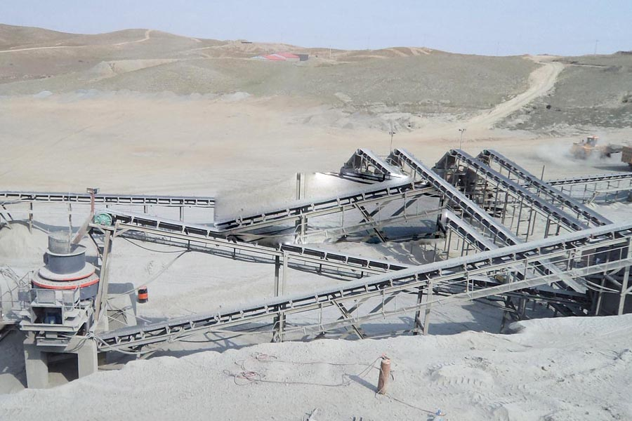

Construction waste crushing production line

Mobile construction waste crushing station for urban construction waste crushing.
river sand making crusher
Sand, sand equipment, artificial sand making machine, sand making machine manufacturers, CAG has decades of Sand, sand equipment, artificial sand making machine, sand making machine manufacturers experience, its products have a number intellectual property, selling domestic and foreign markets, welcome customers to the actual site inspection, buy!
VSI Sand, Sand Pebbles, Sand quartz sand, artificial sand making machine, VSI crusher products highlight the advantages of VSI series Sand Bai Chen is now working conditions combined with the latest design achievements, is currently The most advanced, high performance system of sand equipment, artificial sand making and stone shaping machine field device of choice.

In sand crushing plant The raw materials are first placed into elementary-crushing machine (jaw crusher) via vibrating feeder for crush, and so the elementary products are transferred through belt conveyor for your secondary-crushing machine (cone crusher) for secondary crush. The vibrating screen separates the secondary products into two kinds.
Usually the one satisfying the traditional with the Vertical Shaft Impact crusher (sand-making crusher) is going to be conveyed for the sand-making machine and be finished products after being washed through the sand washer. Another kind will be restored for the secondary-crushing machine being crushed again. Once the input size your materials includes a smaller footprint than 40mm, we recommend you the sand making flow designed with VSI5x series sand making machine, vibrating screen, sand washing machine, etc; otherwise, there may be another solution created for you, equipped with vibrating feeder, jaw crusher, impact crusher (optional), cone crusher, VSI5x series sand making machine, vibrating screen and sand washer.
The flow chart of silica sand processing is: The quartzite (quartz sand) is mined from deposit quarry, then your recycleables is going to be transferred to a stockpile for Primary crushing. Inside the Primary jaw crusher, the raw quartz sand is fed via a vibrating feeder from hopper. After primary crushing, the crushed quartz is going to be fed into cone crusher for further crushing,it will probably be sent to VSI crusher (sand making machine) for final fineness crushing. After crushing, the quartz sand will probably be sieved into different grades by vibrating screen. The grain size fulfill the demands is going to be collected, as the others is going to be utilized in sand making machine for further crushing. For river sand, our screening machine may also sieve the river sand into diffferent grades based on the clients’ demands.
The common grain sizes of silica sand are: 0-0.5mm, 0.5-1mm,1-1.5mm, 1.5-2mm,2-4mm. These sand is popular in building, construction and foundry industries. Sand Screening, Flotation and Drying The sand flotation process is primarily accustomed to remove the iron bearing heavy minerals in glass sand. The minerals are usually just like the iron bearing minerals described within the gravity section. Occasionally, flotation can also be used to remove mica. In The united states, all glass sand is dried at the silica processing plant just before shipping towards the glass manufacturing plant. The advantage of dried sand towards the glass producer is the better ability to accurately appraise the batch ingredients, better material flow characteristics, and mixing of batch ingredients. The fee to dry the sand, however, is borne by the producers with the silica sand. Glass Sand Drying may be the single most expensive unit operation in the silica plant. As the cost of fuel continuously increases, it becomes much more of a cost burden.
Pakistan manufacturer Sand, sand making production line price, CAG is a professional manufacturer of large-scale Sand, management has a long history. Sand production line of complete sets of design, artificial sand production line. Its Sand price, reasonable prices Sand production line.
VSI new type of sand, pebbles Sand, Sand of quartz sand, artificial sand making machine, VSI sand making machine can process a variety of materials for crushing, also known as pebbles sand, quartz sand Sand while VSI sand making machine is the most professional artificial sand making machine, the artificial sand making multiple feeding mode and broken patterns.
Leave Me A Message, Now
If you have any questions regarding equipment prices, production line configuration or other problems, you can send a message to us, we will contact you soon.